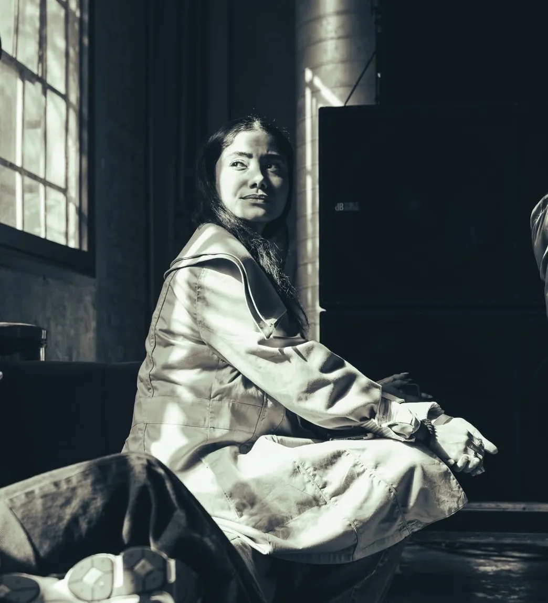
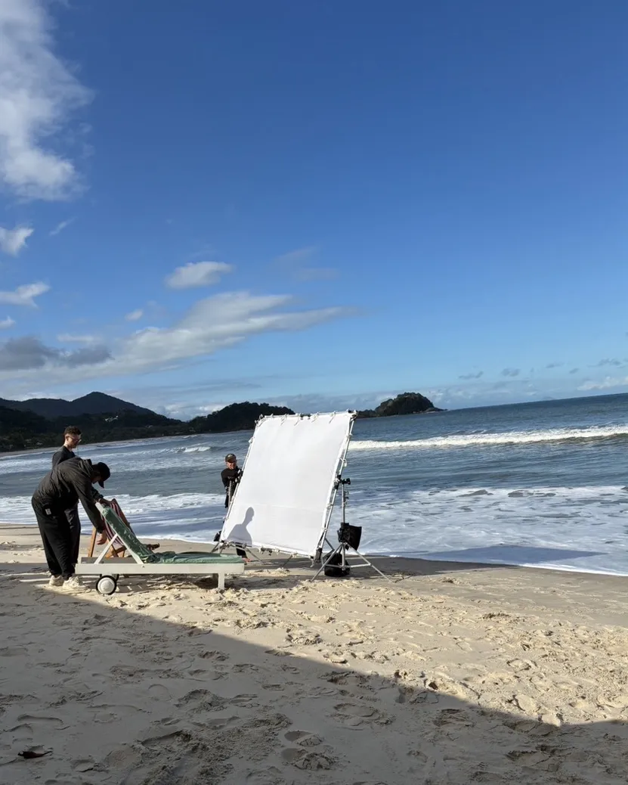
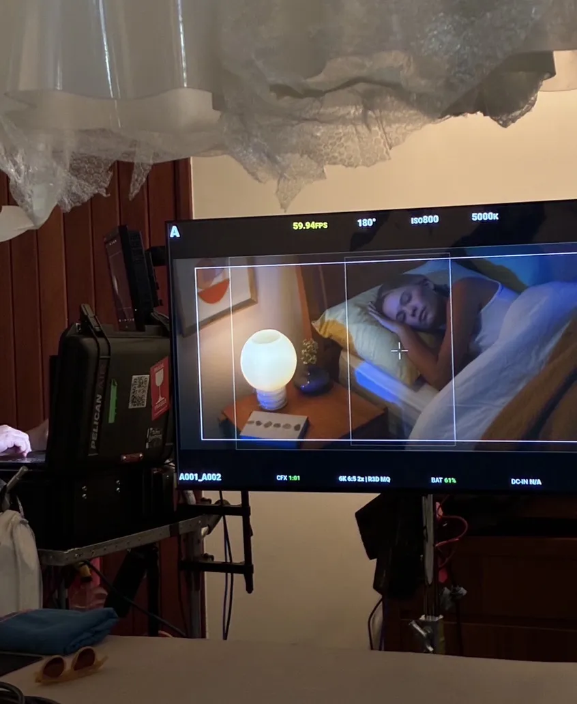
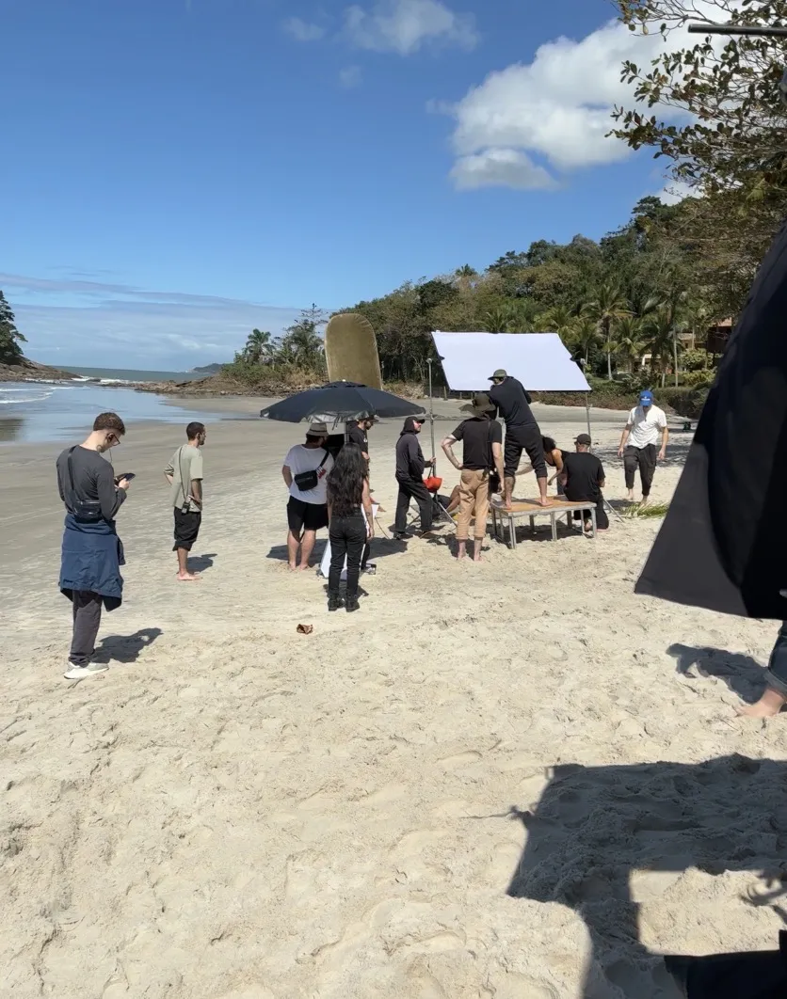
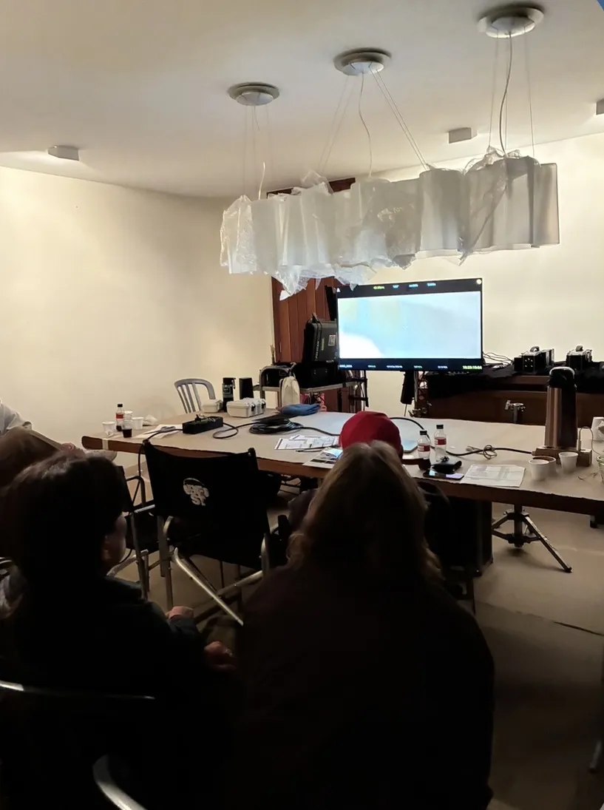
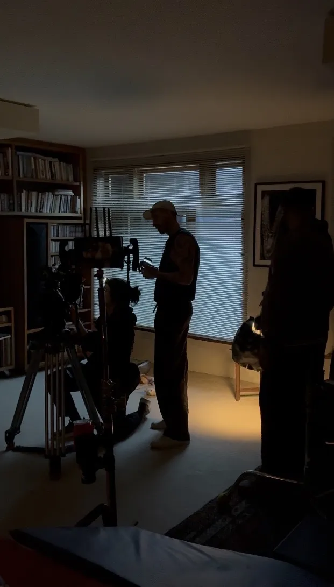

y-Human · Palestra

SPFW · Desfile Piet
Nation · Campanha

BR_IFW · Rio

SPFW · Pacaembu
São Paulo · Gestão · Operações · Impacto
Psicóloga de formação. Gerente de Projetos e Operações na Nation. Facilitadora do programa Mulheres em Foco (Sebrae). Produtora executiva do SPFW. Gestora de projetos de moda e sustentabilidade.

sobre
Sou psicóloga de formação pelo Mackenzie, com pós-graduação em Psicologia Jurídica pela PUC-RJ, e atuo há anos na interseção entre comportamento humano, gestão de projetos e produção executiva.
Minha trajetória passou pelo terceiro setor, onde trabalhei com alfabetização e vulnerabilidade social no Cenpec e na Fábrica de Cultura Jaçanã. Passou pela Piet e P_Andrade, onde mergulhei no mundo da moda como assistente de CEO e produtora executiva, com responsabilidades que iam da gestão administrativa e contratos com fornecedores à produção do desfile da marca no São Paulo Fashion Week, no Estádio do Pacaembu. Passou pelo y-Human, onde a moda se somou à sustentabilidade — gerenciando projetos, palestrei em universidades de moda de São Paulo e organizei eventos em Patrimônio Histórico. E chegou à publicidade, onde hoje sou Gerente de Projetos e Operações na Nation.
Em paralelo, facilito turmas do programa Mulheres em Foco, do Sebrae, trabalhando temas como comunicação assertiva, negociação, autoconfiança e tomada de decisão com empreendedoras de todo o Brasil. É um trabalho ancorado em Psicologia Grupal, e é onde mais claramente vejo o que a formação em Psicologia entrega na prática: a capacidade de criar espaço para que pessoas se reconheçam, se posicionem e avancem.
Escrevo com frequência sobre as conexões que encontro entre psicologia, gestão, produção e mercado de trabalho. Sobre o que move grupos. Sobre o que paralisa pessoas. Sobre mulheres e trabalho. Sobre o que acontece nos bastidores de um projeto bem executado.
O fio condutor de tudo isso é o mesmo desde o início: entender o que está acontecendo com as pessoas em determinado contexto e criar condições para que o trabalho flua com qualidade, cuidado e resultado.
trajetória profissional
Nation
A Nation é uma agência publicitária guiada pelos pilares craft, purpose & speed. Nessa função de Gerente de Projetos e Operações, atuo como ponte entre planejamento e criação, agência e cliente, garantindo fluidez nos processos, clareza nas rotinas e entregas que equilibram excelência criativa e eficiência operacional.
De forma direta, acompanho todas as etapas de projetos, conecto equipes e informações, gerencio prazos e impactos, assegurando que cada detalhe esteja alinhado e que as entregas aconteçam de forma coordenada, de acordo com boas práticas de gerenciamento de projetos.
PIET · P_Andrade · Mil Workshops
y-Human (projeto de Moda e Sustentabilidade)
Elaboração dos textos, e-mails e apresentações para parceiros e possíveis patrocinadores; elaboração de reports pós eventos; participação nas palestras realizadas em 8 universidades de Moda de São Paulo no ano de 2024; organização de agenda e cronograma do projeto, bem como dos eventos presenciais; elaboração de formulários de inscrições e regras para participação do concurso; liderança das oito equipes de Moda participantes do concurso; seleção e liderança da equipe de staff nos eventos; atuação como Mestre de Cerimônia nos eventos; preenchimento de editais; visitas técnicas.
Universidade de São Paulo
Monitoramento e produção de conteúdo para as redes sociais da Biblioteca Cyro de Andrade e para a Revista Brasileira de Educação Física e Esporte; correção e revisão gramatical de artigos científicos.
Fábrica de Cultura Jaçanã
Atendimento psicológico gratuito; coordenação de atividades formativas remotas com educadores da instituição sobre temas como vulnerabilidade social, preconceitos, violências e saúde mental; promoção de inclusão social.
CENPEC
Comunicação direta com Secretários, coordenadores e professores municipais de São Paulo; participação em reuniões de elaboração dos conteúdos formativos, bem como nas próprias formações; negociações para contratação de direitos autorais; homologação de cursos online e conhecimento sobre ambientes virtuais de aprendizagem; comunicação externa; participação voluntária de grupos de estudos sobre raça e gênero.
Laboratório de Estudos da Violência e Vulnerabilidade Social
Centro para Crianças e Adolescentes Aziz Ab'Saber
bastidores · nation





escrita
Estava lendo um livro sobre economias femininas no Brasil, uma obra que traz contribuições para pensarmos uma nova sociedade, numa realidade ainda majoritariamente estruturada em benefício dos homens. No livro, era citado O Segundo Sexo, de Simone de Beauvoir. Ao ler um trecho sobre o livro, que trata da relação entre o desenvolvimento psicológico das mulheres e os condicionamentos da socialização em que crescemos, e como isso faz com que a mulher se torne apenas um apêndice do sexo masculino, imediatamente me veio à cabeça a música O Segundo Sol, de Nando Reis. Na minha experiência de vida, essa música ficou marcada pela voz da Cássia Eller.
O Segundo Sexo foi um dos pontapés para o acendimento dos movimentos de mulheres no mundo, muito próximo à Conferência da ONU de 1975, ano declarado como o Ano Internacional da Mulher. O Segundo Sol, por sua vez, nem havia sido escrito ainda naquela época. Fui cantando a letra mentalmente, com a página do livro ainda aberta, e fui vendo que relação havia entre o segundo sol e o segundo sexo.
Comecei a fazer uma relação: os astrônomos, trazendo para o mercado de trabalho, seriam aqueles que historicamente ocuparam o centro do poder. A música fala dos astrônomos tratando aquilo como "apenas um cometa" — passageiro, menor, periférico. Fazendo o paralelo: as mulheres seriam os cometas. Os dominantes do mercado de trabalho as enxergam assim: passageiras, periféricas, citadas de vez em quando, mas nunca como centro.
Entretanto, Beauvoir não estava dizendo que as mulheres são menos. Ela estava denunciando que a sociedade as construiu como menos, e que isso não era natureza, era condicionamento. A história provou que ela estava certa. O que vejo nas mulheres do curso que facilito é que um grande obstáculo é a voz interna que diz que não é boa o suficiente. Isso tem nome: síndrome da impostora. E ela não nasceu do nada — ela é o condicionamento que Beauvoir descreveu. O Segundo Sexo e O Segundo Sol, produzidos em tempos e contextos completamente diferentes, mas apontando para a mesma direção: o que foi colocado em segundo lugar não é menor. Quando uma mulher encontra esse ponto, algo muda.
Tenho tido conversas nas últimas semanas sobre algumas iniciativas, e uma coisa que sempre fica muito clara pra mim nessa fase de concepção é o quanto uma ideia leva tempo pra existir de verdade. Não no sentido de executar, mas de entender o que ela é. São conversas que vão se desdobrando, começam de um jeito, mudam no meio, às vezes continuam dias depois; alguém traz uma referência, aparece um ponto novo, alguma coisa desloca o caminho e você precisa voltar, repensar, testar de novo.
Na minha visão, esse processo sempre deixa evidente que a fase inicial pede tempo e atenção. Mais do que abrir possibilidades, é começar a entender o que faz sentido sustentar, o que ganha força a cada novo papo e o que não precisa avançar. E é justamente aí que eu me divirto mais: organizando o que ainda está solto, conectando pontos, ajudando a dar direção sem forçar uma definição antes da hora.
O tempo é importante! Não dá pra passar o carro na frente dos bois, mas, por outro lado, as coisas não podem ficar sem algum nível de amarração. Então, no meio disso, tem algumas coisas que eu passei a tratar como regras de condução: sair com um próximo passo com prazo definido para realização; não tentar resolver tudo em algumas horas, mas também não finalizar uma conversa da mesma forma que ela se iniciou; refinar o caminho, sem reiniciar a cada nova conversa. No fim, é assim que eu gosto de colaborar em iniciativas que estão sendo construídas do zero.
Existe algo que a gente quase nunca fala quando discute trabalho invisível das mulheres: as mulheres não estão sobrecarregadas apenas pelo trabalho remunerado somado ao trabalho doméstico, elas estão o tempo todo trabalhando para que a roda do mercado continue girando. Elas cuidam de quem ainda vai trabalhar e integrar o mercado de trabalho: crianças, jovens, futuros trabalhadores. Elas cuidam de quem já não trabalha mais: idosos, aposentados, pessoas adoecidas. Elas cuidam de quem trabalha hoje. Elas visitam familiares encarcerados, com a esperança de que serão ressocializados e reinseridos no mercado de trabalho. E, ao mesmo tempo, trabalham fora de casa. E, quando voltam, trabalham dentro de casa.
A perspectiva da reprodução social ajuda a enxergar isso com mais clareza: o mercado de trabalho só funciona porque alguém garante que as pessoas existam, cresçam, se mantenham vivas e minimamente cuidadas. E esse trabalho segue sendo feito majoritariamente por mulheres. O resultado é uma sobreposição constante: mulheres seguem sendo maioria no trabalho de cuidado, dentro e fora de casa, ao mesmo tempo em que enfrentam desigualdades salariais e barreiras de acesso a posições de poder no mercado de trabalho.
Esse apagamento tem origem em escolhas feitas dentro da própria teoria econômica. Autores centrais da economia clássica, como Alfred Marshall, ajudaram a consolidar a ideia de que só é considerado econômico aquilo que pode ser mensurado em termos monetários. Pouco podemos fazer no curto prazo, porque as mudanças são lentas e esse debate é antigo. Mas é importante, ao menos, reconhecer essa lógica e continuar relembrando que ela existe. Por último: afaste-se dos Alfreds. Tem muitos por aí!
Os pensamentos desenvolvidos aqui partem de leituras e reflexões dos autores Vogel, Picchio, Jefferson e King, apresentadas no livro Economia Feminista no Brasil. Trago com frequência tópicos sobre mulheres e mercado de trabalho porque sou facilitadora do programa Mulheres em Foco, do Sebrae.

"O ser humano é simultaneamente um ser sociável e um ser socializado, que aspira comunicar com os membros de uma sociedade que o forma." (Marcos Alexandre, 2002). Essa frase sempre me lembra o quanto nenhum processo de desenvolvimento acontece sozinho. Estamos sempre inseridos em grupos.
É a partir da Psicologia Grupal que conduzo minhas turmas no Mulheres em Foco (Sebrae Nacional + DOT Digital Group), entendendo cada conjunto de alunas como um microgrupo humano, e criando um espaço onde cada uma se reconhece em sua singularidade e, ao mesmo tempo, se conecta na busca de objetivos compartilhados dentro de processos de desenvolvimento pessoal e também profissional.
Cada turma é um espaço pra aprender a teoria e, em seguida, testar isso na prática, com exercícios, simulações, e análises de situações reais. A minha ideia é que cada mulher saia entendendo como se posicionar, sustentar uma conversa difícil, definir seus objetivos e próximos passos com clareza e comunicar o que quer sem abrir mão de quem se é.


Foi curioso entrar num espaço que, até pouco tempo atrás, nem fazia parte do meu radar. Agora que comecei a viver a publicidade de dentro, tudo parece ter um outro sentido: as conversas, os bastidores, o jeito como as ideias ganham corpo. Fui principalmente pra assistir o painel "Aquecimento COP30: seu impacto para o resto do século", com Luciana Haguiara (fundadora e CCO da NATION), Alice Pataxó (comunicadora indígena, embaixadora da WWF), Carolina Pasquali (diretora executiva do Greenpeace Brasil) e Ricardo Cardim (botânico e paisagista), mediados pela jornalista Claudia Tavares.
ESG é um tema que já me acompanha há algum tempo: participei de projetos guiados por essa agenda e, agora, na Nation, seguimos o mesmo propósito. Tudo isso me fez recordar do primeiro curso que eu fiz voltado pra esse debate: Gestão e Criação de Impacto Social, pela USP, que foi meu primeiro contato direto com os Objetivos de Desenvolvimento Sustentável da ONU. Um dia pra lembrar! Sobre território, pertencimento e sobre como as coisas vão se conectando no caminho.

Fez uma faculdade e achou que estava fadado a seguir só aquele caminho? Eu também pensei assim, por um tempo. Me formei em Psicologia achando que o próximo passo seria seguir a cartilha, rolou até uma pós-graduação em Psicologia Jurídica. Mas a vida profissional, quando a gente escuta de verdade, nem sempre é linear.
Ao longo dos anos, percebi que o mais valioso não era o nome do cargo, nem a área onde eu atuava, mas as habilidades que fui desenvolvendo e conectando. Aprendi a escutar de verdade (gente e projetos); aprendi a transformar ideias em operação, e sonhos em cronogramas reais; aprendi a manter o foco no detalhe sem perder de vista o todo. Foi assim que fui navegando entre planejamento e execução de projetos, moda, produção executiva, terceiro setor, assistência de diretoria. E tudo isso me levou à publicidade — como Gerente de Projetos e Operações. Não venho da publicidade. Mas venho da prática de cuidar do invisível que faz os processos fluírem com escuta, estratégia, ética e coerência.
Nas últimas semanas, venho me desafiando a fazer o seguinte exercício: encontrar nas práticas da Produção Executiva nomes e conceitos que a Psicologia já estuda há décadas. Segundo a Teoria da Identidade Social, nossa percepção de quem somos está ligada aos grupos aos quais pertencemos. Sentir-se parte de uma comunidade vai muito além da simples presença física — envolve o compartilhamento de valores, emoções e experiências que constroem um senso coletivo do "nós".
No contexto de eventos e projetos, esse entendimento é crucial. O produtor executivo cria não só uma organização eficiente, mas também espaços simbólicos onde as pessoas possam se reconhecer como parte de algo maior. Esses símbolos se manifestam de forma sutil — um ótimo exemplo é o que chamamos de Rito de Passagem: aquele momento em que, ao atravessar uma entrada com som e luz diferentes, o corpo já entende que está entrando em outro universo.
E aqui vai um ponto importante: pra esse gatilho ser ativado não precisa ser algo gigantesco. A psicologia está no simbólico, e o que ativa o impacto profundo não é necessariamente o tamanho ou a grandiosidade, mas a profundidade da experiência. Quando o produtor executivo entende e trabalha com essa dimensão simbólica, ele não está só organizando um evento. Está criando um espaço vivo, que fala diretamente ao corpo e à mente das pessoas, tornando a experiência mais rica, memorável e transformadora.
Me formei em Psicologia. E talvez esse tenha sido o melhor ponto de partida que eu poderia ter escolhido. Mesmo sem seguir para a clínica, eu uso o que aprendi todos os dias — quando facilito grupos, quando lidero staffs, quando projeto experiências, quando penso comunicação, impacto social, cultura. A psicologia me treinou para a análise.
Durante um tempo, achei que minha trajetória fosse não linear. Hoje vejo que ela é coerente. Só não é óbvia. Um bom exemplo dessa não linearidade é Daniel Kahneman. Ele era psicólogo, mas ganhou o Prêmio Nobel de Economia justamente por aplicar a psicologia à tomada de decisões econômicas — um campo completamente diferente do que economistas estavam acostumados. É essa abordagem que eu levo comigo em tudo o que faço. O mercado precisa dessa visão ampla, analítica e profunda que só a Psicologia entrega.
palestras & eventos
Brazil Immersive Fashion Week · Ago 2024 · Rio de Janeiro
Painel no LED Stage do BR_IFW com Felipe Gusta, Joy Pires, Marcella Alves, Paula Kim e Pedro Andrade — sobre a jornada do y-Human, blockchain na moda e soluções open-source geradas pelo hackathon.

Mackenzie Fashion Week · Nov 2024 · Campus Higienópolis
1ª edição do Mackenzie Fashion Week sobre como blockchain e IA podem transformar a moda, promovendo transparência e rastreabilidade. Com Joy Pires, Catarina Papa, Fabrício Takahashi e Gus Sant'ana.
formação
Ago 2022 — Dez 2023
PUC — Rio de Janeiro
Fev 2015 — Jun 2021
Universidade Presbiteriana Mackenzie — São Paulo
habilidades e competências
contato
Aberta a novas oportunidades em gestão de projetos, operações e produção executiva.